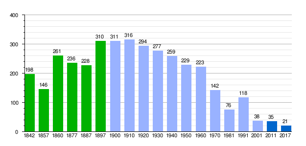
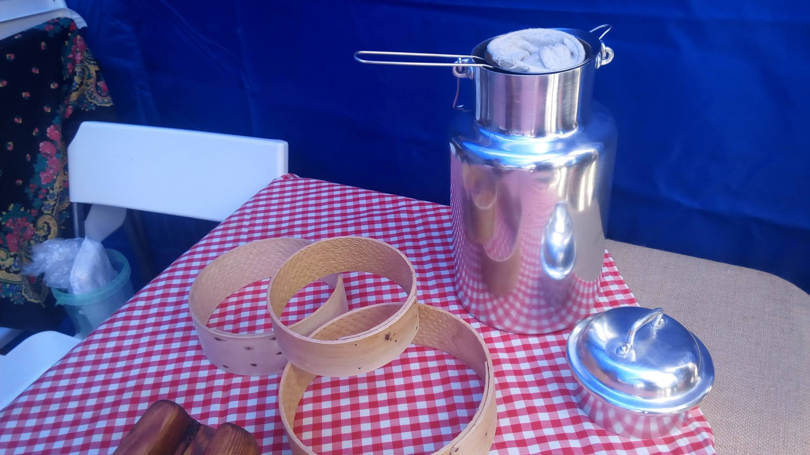
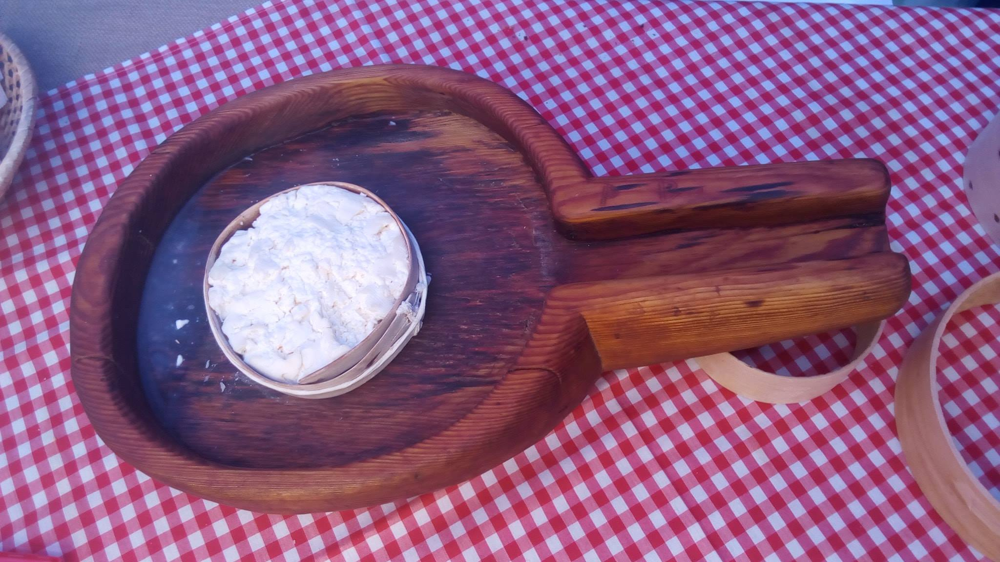
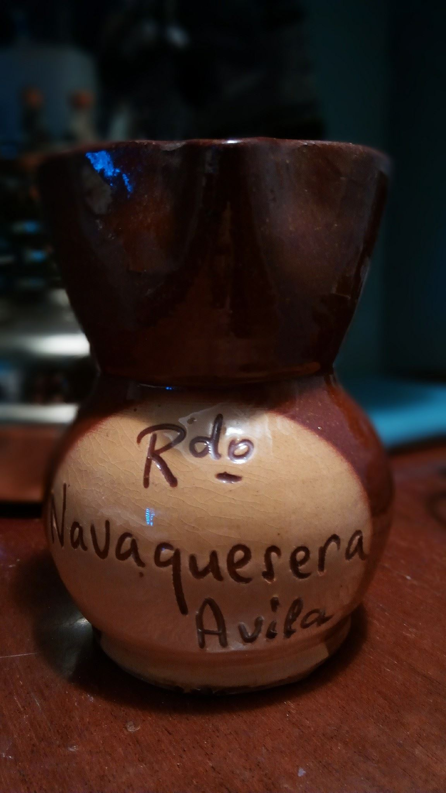
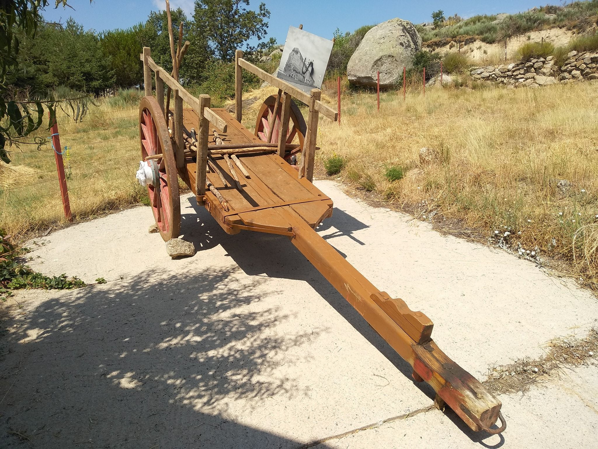
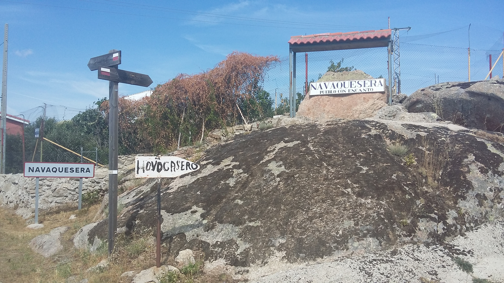

Signification de l'écusson:
- En haut de l'écusson nous pouvons facilement reconnaître la couronne royale espagnole, or sur rouge représentant l'emblème traditionnel de la Castille.
- La couleur verte faisant le contour du bouclier fait référence aux pâturages issus du mot «Nava» qui représente une terre basse et plate, parfois marécageuse, située entre des montagnes.
- Les 9 tours crénelées représentent les neufs populations ayant historiquement constitué le conseil de Burgohondo (Navaquesera, Navalacruz, Navaluenga, Navalosa, Navarredondilla, Navarrevisca, Navatalgordo, Hoyocasero et Burgohondo). La tour représentant Navaquesera se détache des autres car elle est soutenue par une chèvre de montagne.
- Derrière l'animal, la couleur rouge fait référence à la couleur du royaume de Castille dont la population est attachée pour des raisons historiques, politiques et sentimentales.
- Enfin, les cinq feuilles de figuier sur un fond or symbolisent la richesse arboricole du lieu.

L'histoire de Navaquesera
Au début du XIIIe siècle, Navaquesera a émergé comme une enclave de population, principalement en raison du renforcement militaire de l’arrière-garde au niveau du Système Central ou de la Sierra de Gredos (chaînes de montagnes).
De nombreux villages limitrophes comme Navaluenga Navalosa, Burgohondo ou bien Hoyocasero, ont subi la même chose.
Face à l'arrogance urbaine de Plasence (40 000 hab), Talavera (84 000 hab) et Escalona (4 000 hab), se développera le conseil d'Avila le long de la vallée d'Alberche
Ce mouvement de population, défensif et militaire, détenait de nombreux avantages; tout d'abord celui de posséder une position stratégique aux confins de la province, sur les rives de l'Alberche (cours d'eau), au pied de la Sierra de Gredos; mais également celui de l'exploitation des ressources agricoles et animales de la région. En effet la vallée de l'Alberche, peu peuplée aux XIe et XIIe siècles, jouissait de vastes prairies ainsi que d'un manteau arboricole d'une grande variété qui fera l'objet d'une occupation progressive et d'un bouleversement démographique.
Le nombre d'habitants ne fit qu'augmenter au fil des années, comme le montre ces chiffres de recensements de 1541 où il y'avait environ 120 hab, environ 196 en 1591 puis plus de 300 en 1900.

Le toponyme "nava" avec lequel se dénomment de nombreuses populations et lieux du versant nord de Gredos et dont le dernier sens serait celui de "plaine de prairie entre montagne", nous pousse à penser à l'existence de groupes humains réduits, dédiés principalement à l'élevage.
Concernant le nom du village Navaquesera, Eduardo Tejero suppose sans doute l'union de deux mots: "nava", avec l'étymologie que nous avons fournie précédemment, une "plaine de pâturage en zone montagneuse" et l'expression "quesera" d'interprétation plus douteuse.
Pour Juan Antonio Chavarria Vargas, il est évident, qu'un/une "quesera" serait un "lieu ou récipient servant à la fabrication du fromage". Il se basa sur le Dictionnaire de l'Autorité de l'Académie royale espagnole de la langue de 1726. Cette interprétation est partagée par José Antonio Calvo Gomez lorsqu'il affirma que Navaquesera "était un lieu d'élevage à prédominance bovine, qui a laissé sa marque sur son nom". De plus, des rumeurs laissent à penser que les trous se trouvant dans les rochers, servaient à y introduire le fromage pour facilité sa fermentation.


Cependant il existe d'autres hypothèses quant au nom de la commune. La première est que le mot "quesera" viendrait du latin "quassiare" ou "quassare" signifiant frapper, briser, casser; que l'on rajoute au préfixe "nava". Navaquesera signifierait donc "un pâturage simple dans un terrain brisé/cassé"
La seconde hypothèse serait que Navaquesera fût, pendant la guerre, un point de rassemblement militaire (une base militaire) qui servait à repérer l'ennemi qui arrivait car c'est un des points le plus haut de la région, il y était donc facile de repérer l'ennemi a plusieurs kilomètres.
Le Livre de Monteria du roi Alphonse XI, vers 1344, fournira les premières nouvelles documentées sur l'existence de Navaquesera en tant que population de personnes à considérer. De nombreux villages se sont créés durant cette période, tous ont formé un groupe unitaire reconnu comme "Las navas de Ávila". Ces villages sont Navaluenga, Navalosa, Navamuñoz, Navalvado, Navasantamaría, Navalsanmillán y Navatalgordo.
30 Novempbre 1933: indépendance juridiques des 49 villages de Castilla y Leon, qui peuvent maintenant avoir un maire et ainsi leur province respective.
Navaquesera peut alors intégrer le nouveau parti judiciaire de la ville d'Avila
Autre reforme importante:la dissolution du régime seigneurial et la constitution des mairies dans toutes les entités de population du royaume



